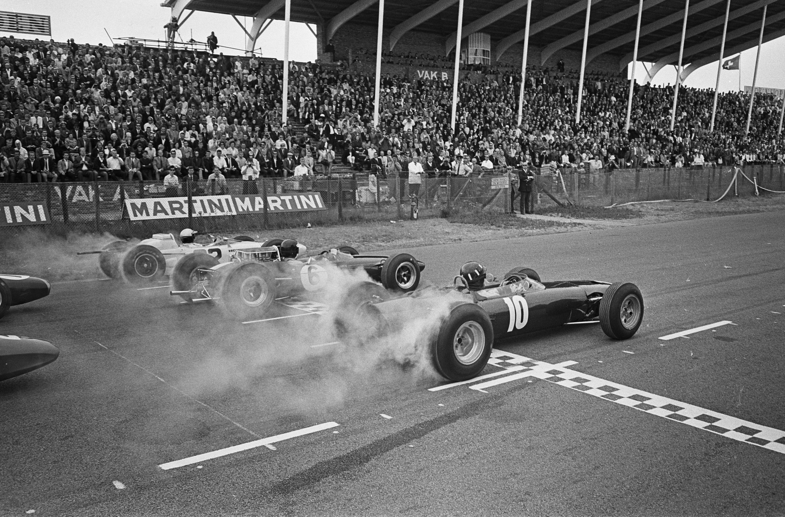
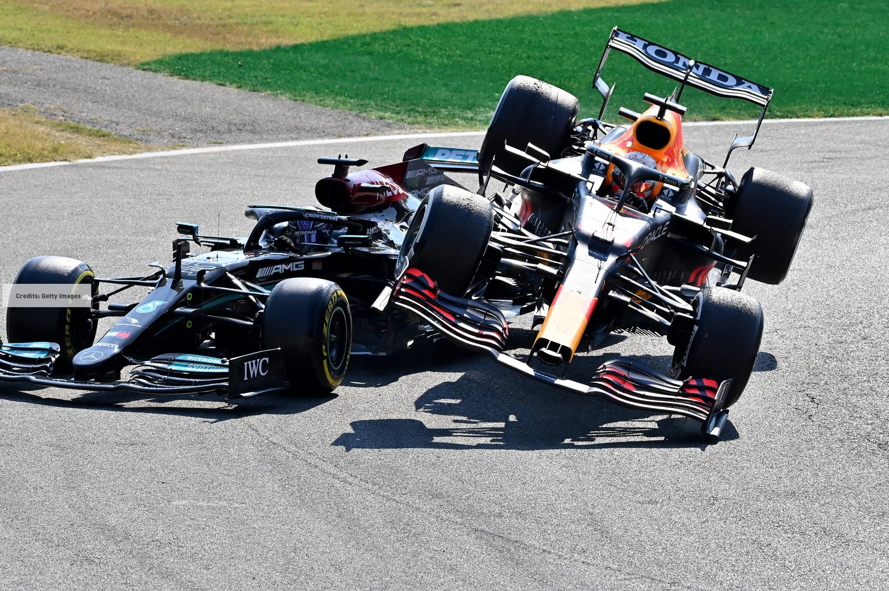

LE PRIME SFIDE SU QUATTRO RUOTE
27 luglio, 2024

All'inizio del XX secolo, l'automobile, appena inventata, iniziò a conquistare le strade e a far sognare velocità e avventura. Nasceva così la passione per le competizioni automobilistiche, che ben presto si sarebbero evolute in uno sport a tutti gli effetti, dando vita a quella che oggi conosciamo come Formula 1. Le prime gare automobilistiche erano eventi più simili a esibizioni che a vere e proprie competizioni. Non esistevano regole precise, né circuiti appositamente progettati. Le auto, spesso molto diverse tra loro per caratteristiche e prestazioni, si sfidavano su strade aperte al pubblico, mettendo a dura prova sia i piloti che i mezzi. Queste prime gare erano più che altro un modo per dimostrare le potenzialità delle nuove invenzioni e per soddisfare la curiosità di un pubblico sempre più appassionato. Ben presto si comprese la necessità di stabilire regole comuni per garantire la sicurezza dei piloti e l'equità delle competizioni. Nacquero così le prime formule, ovvero degli insiemi di regole tecniche che definivano le caratteristiche delle vetture partecipanti, come la cilindrata del motore, il peso e le dimensioni. L'obiettivo era quello di creare un contesto competitivo più equo e sicuro, in cui le vetture avessero caratteristiche simili e i piloti potessero confrontarsi alla pari. Dalle prime formule si svilupparono gradualmente campionati sempre più organizzati e competitivi. Le gare si spostarono dai percorsi stradali ai circuiti appositamente costruiti, le auto diventarono sempre più sofisticate e i piloti sempre più specializzati. Fu così che nacque la Formula 1, la massima espressione del motorsport.
L'APICE DEL MOTORSPORT
10 luglio, 2024

La Formula 1 rappresenta l'apice del motorsport mondiale, una disciplina che combina tecnologia all'avanguardia, abilità dei piloti e competizione serrata. Nata dalle prime corse automobilistiche, la Formula 1 si è evoluta nel tempo diventando uno sport globale, seguito da milioni di appassionati. Le monoposto di Formula 1 sono delle vere e proprie opere d'ingegneria, frutto di anni di ricerca e sviluppo. Ogni dettaglio, dal motore alla carrozzeria, è progettato per massimizzare le prestazioni e garantire la massima velocità. I team che partecipano al campionato mondiale sono composti da ingegneri, meccanici e tecnici altamente specializzati, che lavorano incessantemente per migliorare le prestazioni delle vetture. Al volante di queste macchine potenti e sofisticate troviamo i piloti, veri e propri eroi dello sport moderno. Dotati di una preparazione fisica e mentale eccezionale, i piloti di Formula 1 devono affrontare sfide estreme, guidando al limite delle possibilità delle loro vetture. La loro abilità nel gestire la velocità, la pressione e lo stress li rende figure affascinanti e ammirate da milioni di persone. Le gare di Formula 1 si svolgono sui circuiti più famosi e iconici al mondo, come Monaco, Spa-Francorchamps e Monza. Questi circuiti, con le loro caratteristiche uniche, offrono uno spettacolo indimenticabile agli appassionati. La storia della Formula 1 è costellata di rivalità epiche tra piloti e team, che hanno contribuito a rendere questo sport ancora più affascinante. La Formula 1 è uno sport che unisce passione, tecnologia e spettacolo. È uno sport globale, seguito da milioni di appassionati in tutto il mondo, che si ritrovano ogni weekend per seguire le gare e tifare per i loro piloti preferiti. La Formula 1 è anche un importante laboratorio di innovazione, dove vengono sviluppate nuove tecnologie che poi trovano applicazione nel settore automobilistico.